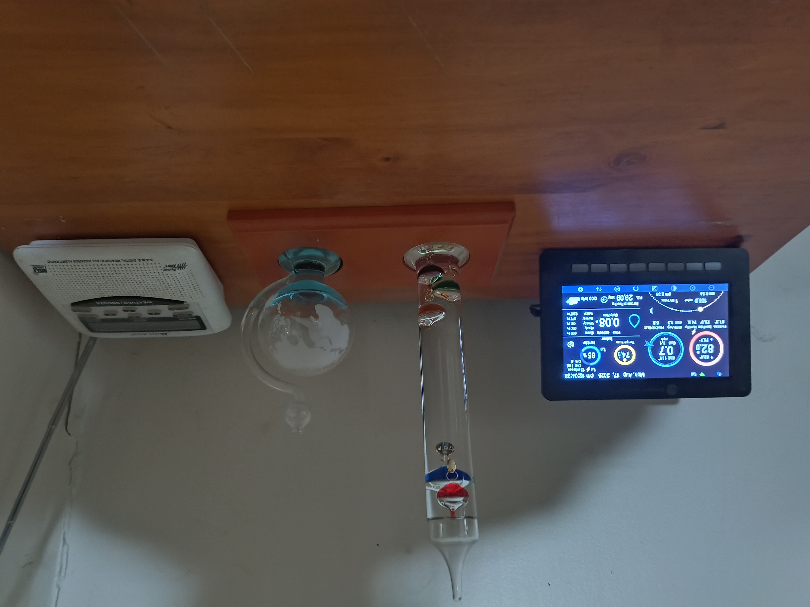
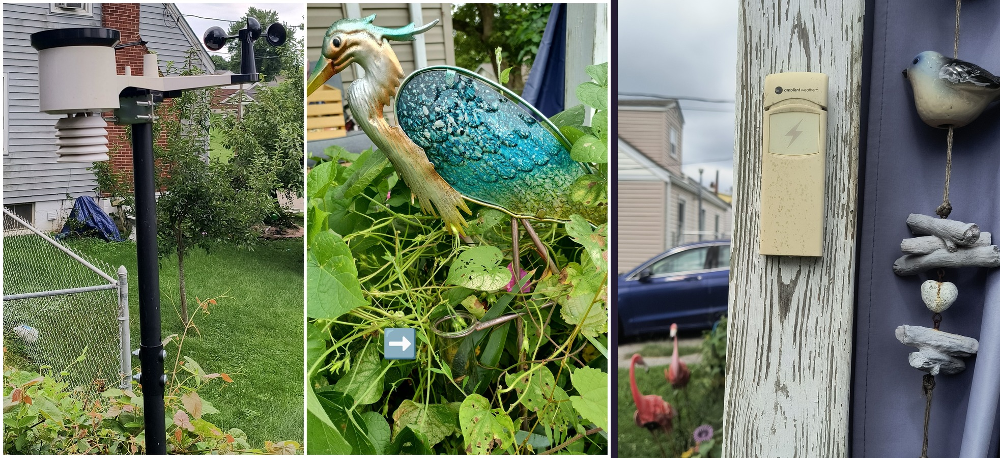
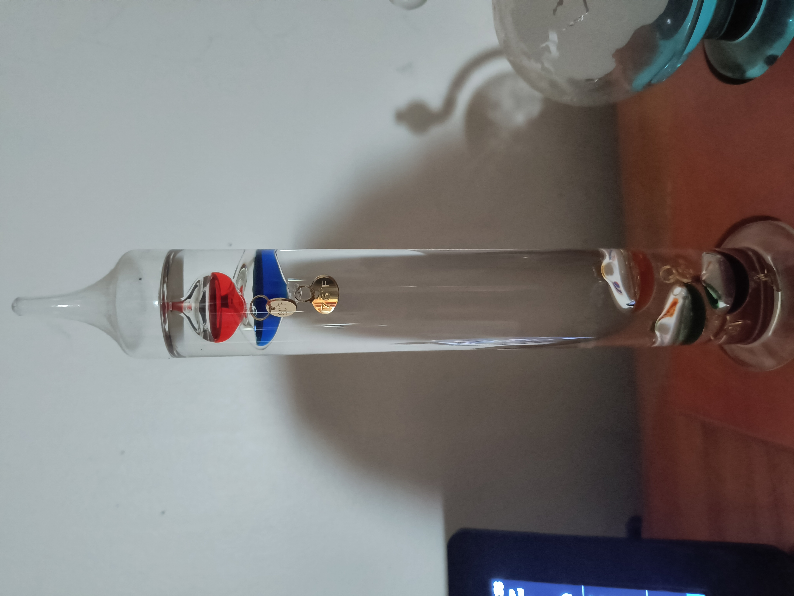
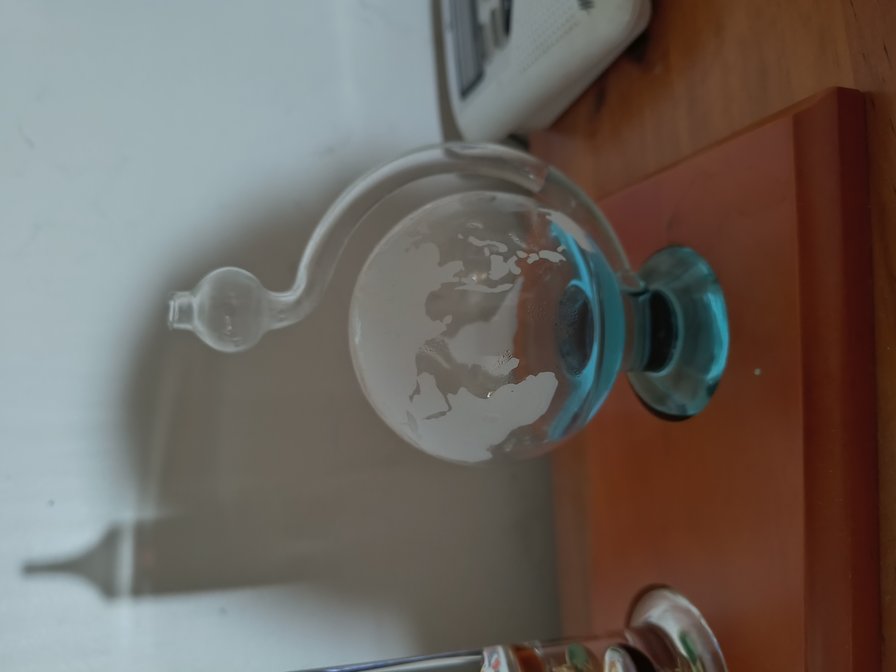
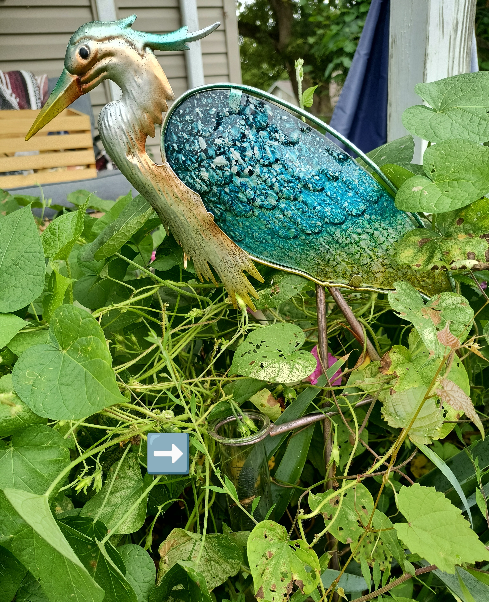
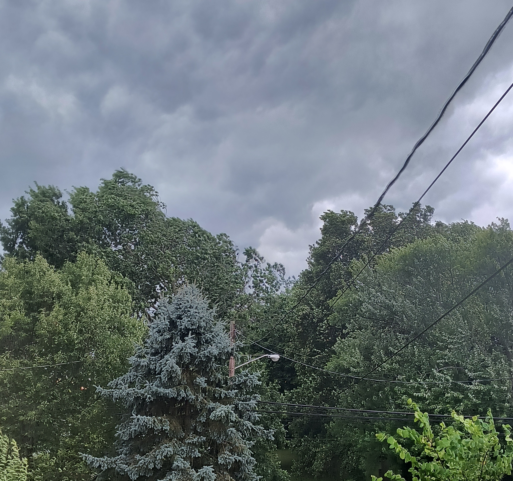
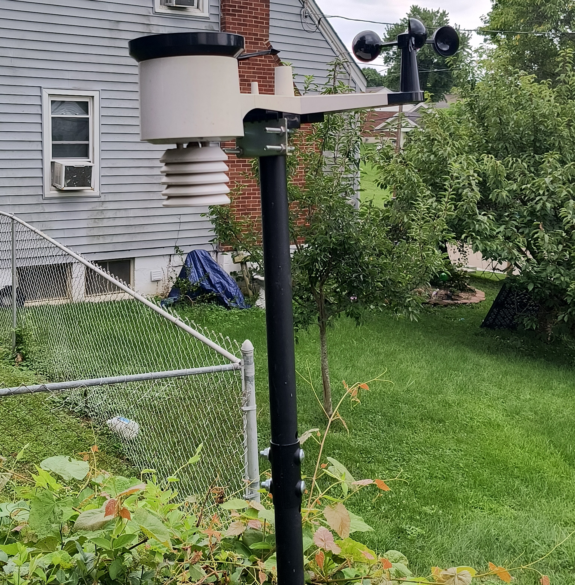
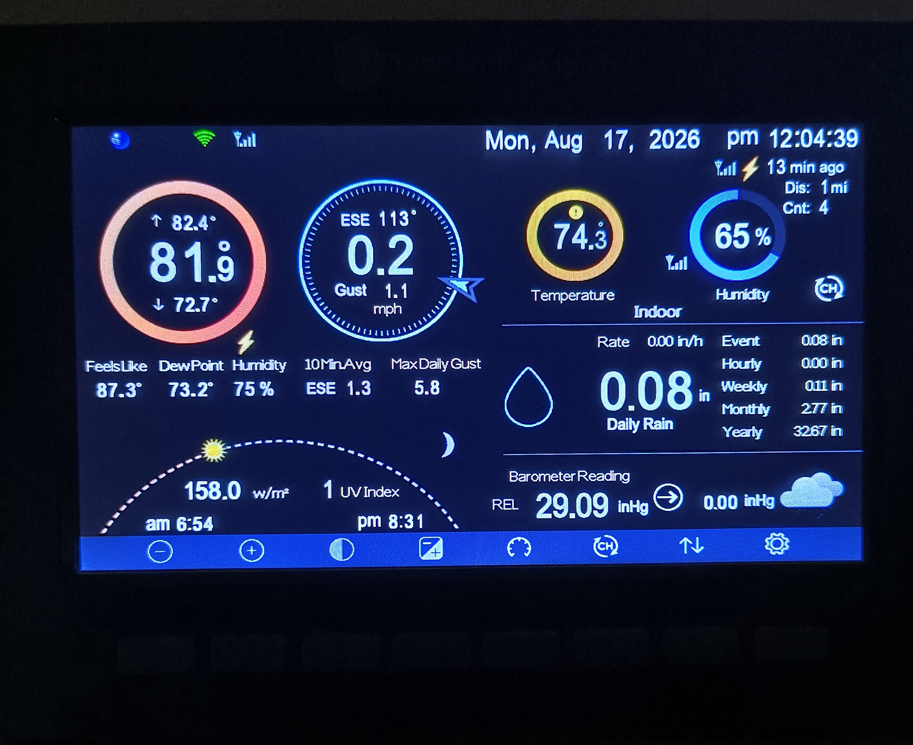
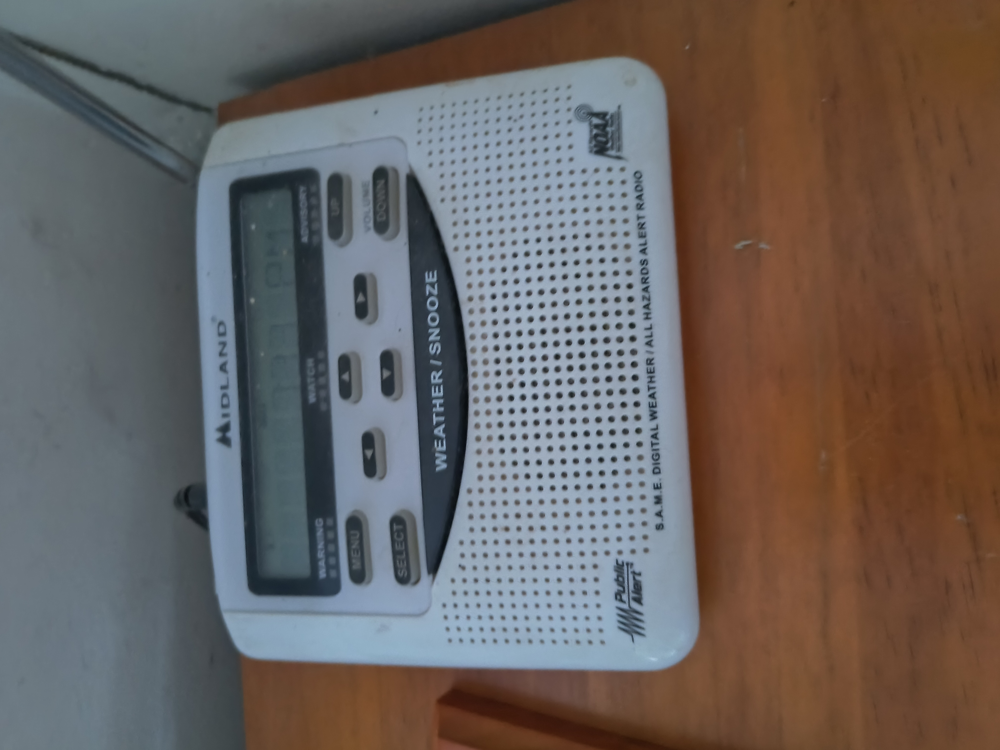
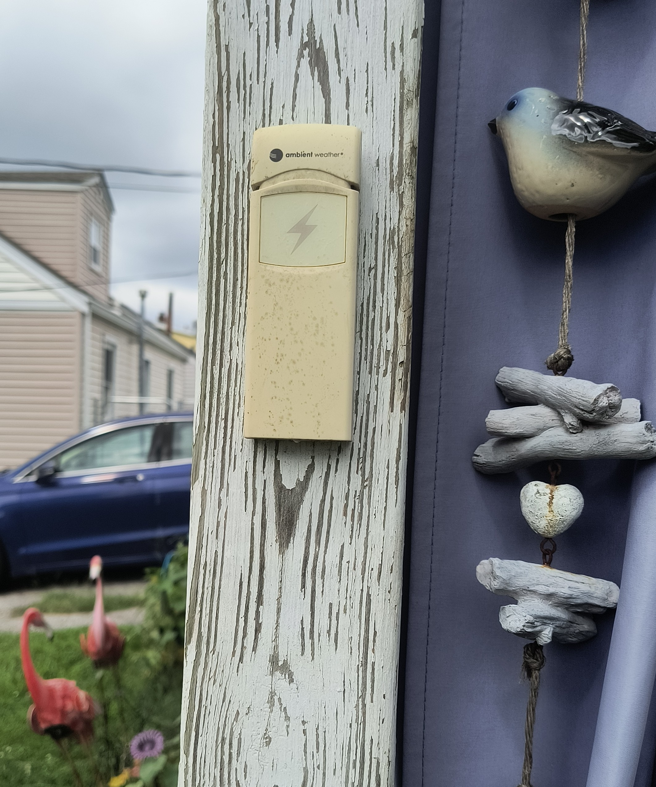

A look at how the old ways and modern instruments share space here.

I have created a blend of both the old ways and the new ways indoors...

...and outdoors.
☽ ☾ ☽
The Old Ways

A Galileo thermometer, because sometimes the old ways are just very elegant physics. The glass
bubbles float or sink depending on the density of the liquid around them, and whichever bubble hovers
lowest while still floating marks the current temperature. No batteries, no app, no calibration — just
glass, water, and four hundred years of getting it right.

A Goethe barometer, named for the poet who was as fascinated by weather glasses as he was by
verse. Rising air pressure pushes water down into the sealed bulb; falling pressure lets it climb the
spout — a quiet warning that a storm is on its way, often hours before my modern sensors say the same
thing.

She looks like garden decor, but tucked against her is a glass rain gauge, marked with
measurement lines so I can see exactly how much has fallen. Old ways and new ways alike, everyone
appreciates a rain gauge with a little personality.

Don't forget to watch the sky! Storms make themselves visually known too. I took this picture
from my front porch just a few hours before I was tornado warned.
☽ ☾ ☽
The New Ways

My Ambient Weather WS-2000 outdoor sensor array — temperature, humidity, rainfall, wind speed
and direction, and barometric pressure, all read automatically and sent inside without me ever stepping
into the yard. It's the modern counterpart to my Goethe barometer, and yes, it's usually right.

The console that lives inside, translating everything the WS-2000 collects outside into
readable numbers — indoor and outdoor temperature and humidity, wind, rain totals, and pressure trends,
updated continuously. It's the same information my old-ways instruments hint at, just delivered a little
faster.

My Midland weather alert radio — it doesn't care if the power or the internet is out, it will
still shriek at me the moment NOAA issues a warning for my county. Not glamorous, but it's earned its
spot on the shelf next to everything else that keeps me a step ahead of the sky.

My Ambient Weather lightning detector, wired into the same console as the rest of the
station. I've got tall trees close to the house, so knowing exactly when lightning is nearby — not just
that a storm is somewhere in the county — matters a lot to me. This one tells me both how close a strike
was and whether the strikes are getting closer to me.